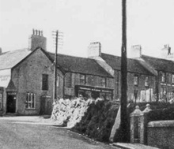

Manchester House – Une boutique des drapiers
Tout au début, Manchester House était un magasin de fringues tenu par Owen Evans et ensuite, dans les années 1940, par Tudor Evans. Ce-dernier a acheté deux cars type « Guilford » en bleu et crème, et a commencé un service de cars local. En 1937, il a vendu ses cars à «Crosville».
Siop Tudor, neben der Post